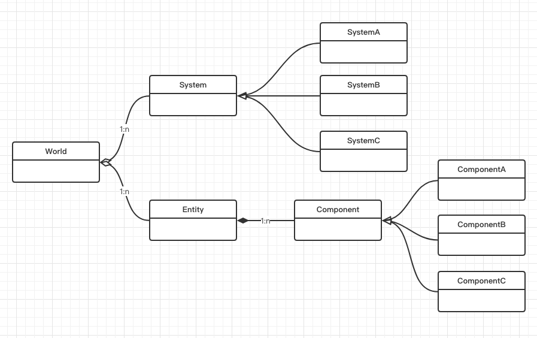
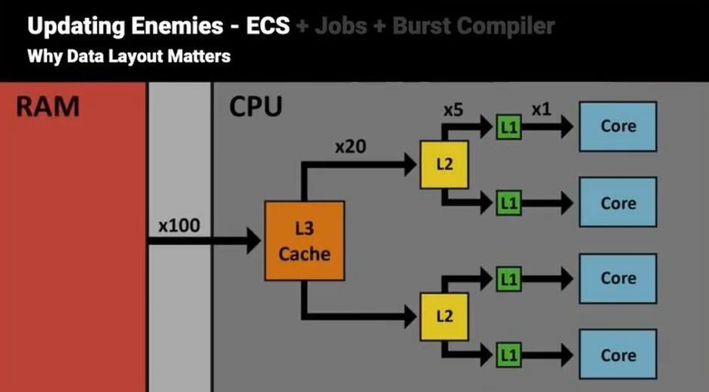
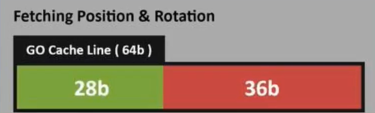
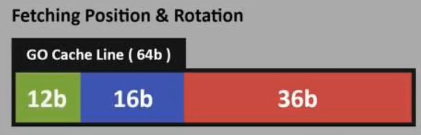
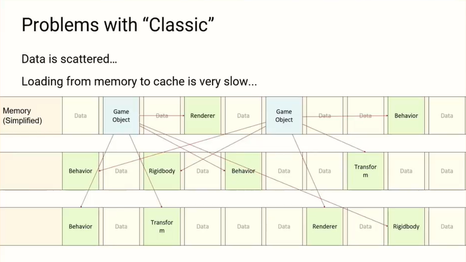
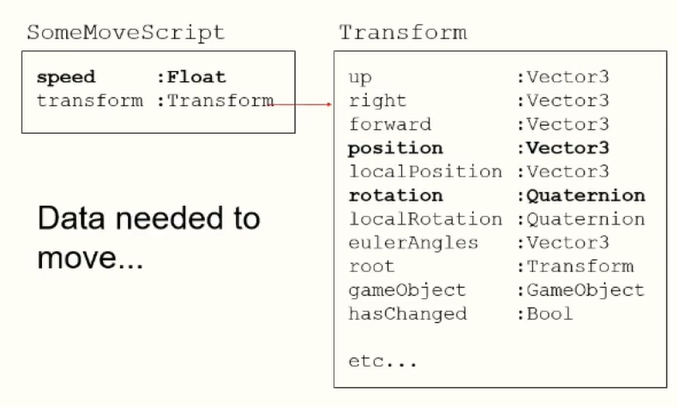
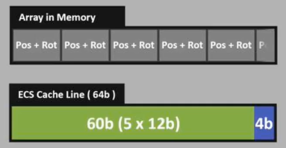

参考视频： DOTS从原理到应用-雨松MOMO
官方文档： 文档
-
ECS架构的概念
ECS，即
Entity-Component-System（实体组件系统），是Unity DOTS 解决方案中的核心框架之一。游戏中任何一个基本单位都是一个 Entity（实体），每一个 Entity 中的每一份数据都是一个Component（组件） 或者叫做 ComponentData（组件数据）。Component 中仅包含数据，而不包含任何对数据操作的方法。一组不同的组件叫做一个 Archetype（原型类型），拥有相同组件的Entity叫做一个 EntityArchetype（实体原型类型）。而一个 System（系统） 则可以根据 Entity 索引获取相应的 Component，对Component中的数据进行处理。也就是说一个Entity，应该由什么样的能力（可以做什么），完全由它拥有哪些Component来决定；应该有什么样的行为（怎么做），完全由它的System来决定

-
ECS的基本架构说明

-
World
管理着一个 EntityManager 和 Systems，而 EntityManager 又通过NativeArray管理着一堆 Entity ，所以如果你的场景上只有一个World，那么你创建的entity和system几乎都能在World中找到。
ps：默认情况下，在PlayMode时，unity都会创建一个World，并且通过反射把所有的ComponentSystem添加进去,可以通过
World.DefaultGameObjectInjectionWorld来获取它 -
Entity
实体其实就是一个
index和version。index 是一个实体的 onlyID ，用于区分不同的实体。当实体被挂上组件后，它的组件都会被 index 所标记，以此来明确该组件是属于该实体的。而 version 是用来区分该实体是第几次世代（Version只有在Entity被回收后会加1） -
Component
与 mono 中的 Component 不同，这里的 Component 只有数据而没有行为，并且数据由 struct 来存储。一般来说只要一个 struct 实现了以下任意一个接口，就可以叫做一个Component
-
IComponentData最通用的自定义组件接口，IComponentData 结构体中不能包含引用类型的对象，因此不会产生GC
-
ISharedComponentData一种特殊的组件接口，一般来说一组不同的Component组合成一个Archetype，但是如果其中有ISharedComponentData，且ISharedComponentData中的值不一样，那么将组合成不一样的Archetype
-
IBufferElementData通过这个接口可以把一组相同的组件作为一个单独的组件，其实就是类似于List的存在而已
-
ISystemStateComponentData用于判断Component中的值是否被改变
-
ISharedSystemStateComponentDataISharedComponentData + ISystemStateComponentData
-
-
System
System不关心Entity，它只负责对Component中的数据进行处理，一般来说只要继承一个
SystemBase即可叫做一个System。ECS会自动找到项目中所有的System，在运行时实例化它们，并将它们添加进一个默认的组里面。Systes是在主线程上执行的，我们可以在
OnUpdate中，利用Job来进行多线程处理，从而提高效率。
-
-
ECS对缓存行的优化
CPU读取数据时，会优先从自己的缓存中去找，如下图的三级缓存结构，如果L1缓存中没有，则从L2缓存中找，如果没有再从L3缓存中找。如果不能缓存中找到，则从内存中找，此时称为一次缓存未命中（Cache Miss）。从图中可以看到，从L1读取数据是最快的，而从内存中读取数据所花费的时间是L1的100倍左右。而ECS的目的之一就是为了提高缓存的命中率（Cache Hit）。

缓存行和传统模式下的内存问题
缓存由若干个 缓存行（Cache Line）组成，每一个缓存行大概占用64个字节
假设控制一个物体的移动和旋转，则需要用到 Vector3(x,y,z)来表示坐标 和 Quaternion(x,y,z,w)来表示旋转，已知一个浮点数需要4个字节，则一共需要 7*4=28 字节，那么在缓存行中将有 64-28=36 字节被浪费掉

但是在实际使用中，比如只能在平面上移动，那么坐标只用到X、Y，旋转只用到了Y，也就是说实际上用到的只有 3*4=12 字节。此时缓存行中将有 16+36=52字节被浪费。而且在传统模式中，每一个游戏对象所在的缓存行经常是不同的，也就是说缓存中有80%可能都是内存垃圾，缓存命中率将直线下降。

传统的游戏对象是这样的，一个游戏对象包含了各种脚本，并且脚本直接可能存在引用关系，他们在内存中的排列将变得十分凌乱，如下图。

假设一个游戏对象挂了1024个脚本，且每个脚本上有一个长度为1024的int数组，忽略游戏对象本身的内存和托管堆指针内存，那么加载该游戏对象则需要 410241024=4MB 内存。如果此时缓存只有4MB，那么加载该游戏对象后，再对其他对象进行加载都会Cache Miss。
此外，由于脚本间的引用，在尝试引用某个脚本中的某一个实例的某一个数据时，也会导致这一整个实例的其他数据被加载到缓存中，比如下面的 transform：

ECS对缓存行的优化
ECS将所有可能用到的数据（比如上面的 Vector3的XY 和 Quaternion的Y）放到一个Component中，并且所有相同的Component（即Archetype）在内存中都排列到一起。
这样优化后，对于刚才的控制一个物体的移动和旋转，一个缓存行则可以缓存5个这样的数据，因为 5*12=60 < 64，此时只会浪费 64-60=4 字节。可以看到仅仅是优化缓存，就能提高大概10倍的效率。

-
Archetype 和 Chunks
之前提到，即使是不同实体的Entity，只要组件相同，都会保存到一个ArcheType中。

ArcheType是一个数组容器，ECS会根据Archetype来进行分配内存，每个内存块我们称之为Chunk。
Chunk长度是固定的16kb。假设一个组件长度为16字节，那么一个Chunk可以保存1024个这样的组件，当16kb容量不够时，会再开一个Chunk来连续保存